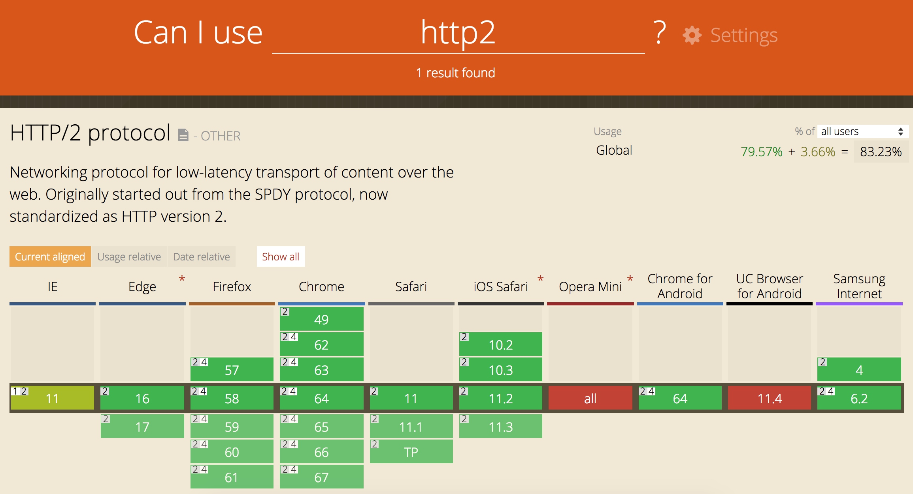

现代前端开发 - WebSocket & Catch & HTTP2
WebSocket
HTML5 WebSocket技术定义了客户端和服务器之间的全双工通信通道。避免了以往通过各种hacks方式的通信。
历史
在WebSocket技术出现之前，前端在处理一些实时更新的数据展现，例如：股票走势、位置信息、进度等业务场景时，往往通过：要求用户不断刷新、通过定时器不停查询或者Comet的服务端推送。
方案1: 要求用户不断刷新
这是一个不可理喻的要求，特别对于广泛的大众用户或者非IT从业者来说。也许只有专业的IT从业者才能够理解并忍受如此糟糕的用户体验。
方案2: 轮询
前端通过JS脚本定时发送HTTP请求，返回数据后更新界面显示。
setInterval(() => {
fetch('url').then((response) => {
// update page
}) ;
}, 5000); // every five seconds
轮询带来的问题：
- 客户端无法预知**是否有新的数据**
- 大量的**无效请求**增加带宽消耗
- 厚重的HTTP请求头，**频繁**的连接创建和断开
方案3: 长轮询
服务器对每个请求保持一段时间的打开状态，如果出现数据更新，会通过该连接发送信息，并关闭该连接。
虽然在一定程度上减少了连接次数，但是服务端保持连接会造成资源消耗，而且无法保证消息返回顺序，同样难于管理和维护
方案4: iframe流
在页面中插入一个隐藏的iframe，利用其src属性在服务器和客户端之间建立一条长链接，服务器向iframe传输数据（通常是HTML，内有负责插入信息的javascript），来实时更新页面。 iframe流方式的优点是浏览器兼容性好
方案5: WebSocket
在创建websocket通信时，客户端于服务器进行握手，将HTTP协议升级为WebSocket协议, 建立连接后使用ws://或wss://前缀作为url
- 数据格式比较轻量，性能开销小，通信高效。
- 可以发送文本，也可以发送二进制数据。
- 没有同源限制，客户端可以与任意服务器通信。
实现
服务端
基于nodejs-websocket
https://github.com/sitegui/nodejs-websocket
- yarn add nodejs-websocket
- websocket-server.js
const ws = require("nodejs-websocket")
// Scream server example: "hi" -> "HI!!!"
const server = ws.createServer(function (conn) {
console.log("New connection")
conn.on("text", function (str) {
console.log("Received " + str)
conn.sendText(str.toUpperCase() + "!!!")
})
conn.on("close", function (code, reason) {
console.log("Connection closed")
})
}).listen(8001)
- 启动服务: node websocket-server.js
客户端
<!DOCTYPE html>
<html lang="en">
<head>
<meta charset="UTF-8">
<title>WebSocket Client</title>
</head>
<body>
<script type="text/javascript">
let socket = null;
function createConnect() {
socket = new WebSocket('ws://localhost:8001')
bindEvents(socket)
}
function bindEvents(socket) {
socket.onopen = () => {
console.log('connected')
}
socket.onclose = () => {
console.log('disconnected')
}
socket.onerror = () => {
console.log('error')
}
socket.onmessage = (e) => {
console.log(`Received: ${e.data}`)
}
}
function sendMessage() {
const msg = document.getElementById('inputText').value
socket.send(msg)
}
window.onload = () => {
if (window.WebSocket) {
createConnect()
}
}
</script>
<div>
<input type="text" id="inputText" />
<input type="button" onclick="sendMessage()" value="Send"/>
</div>
</body>
</html>
握手时的请求信息
浏览器兼容性
应用方案: socket.io
https://socket.io/
Socket.IO是一个完全由JavaScript实现、基于Node.js、支持WebSocket的协议用于实时通信、跨平台的开源框架，它包括了客户端的JavaScript和服务器端的Node.js。
Socket.IO除了支持WebSocket通讯协议外，还支持许多种轮询（Polling）机制以及其它实时通信方式，并封装成了通用的接口，并且在服务端实现了这些实时机制的相应代码。
Socket.IO实现的Polling通信机制包括Adobe Flash Socket、AJAX长轮询、AJAX multipart streaming、持久Iframe、JSONP轮询等。
Socket.IO能够根据浏览器对通讯机制的支持情况自动地选择最佳的方式来实现网络实时应用。
- server
var app = require('express')();
var http = require('http').Server(app);
var io = require('socket.io')(http);
app.get('/', function(req, res){
res.sendFile(__dirname + '/index.html');
});
io.on('connection', function(socket){
console.log('a user connected');
});
http.listen(3000, function(){
console.log('listening on *:3000');
});
- client
<script src="/socket.io/socket.io.js"></script>
<script>
var socket = io();
</script>
http://www.ruanyifeng.com/blog/2017/05/websocket.html
http://blog.zhangruipeng.me/2015/10/22/Web-Connectivity/
https://developer.mozilla.org/zh-CN/docs/Web/API/WebSocket
Catch
通过网络获取内容既速度缓慢又开销巨大。较大的响应需要在客户端与服务器之间进行多次往返通信，这会延迟浏览器获得和处理内容的时间，还会增加访问者的流量费用。因此，缓存并重复利用之前获取的资源的能力成为性能优化的一个关键方面。
根本思路是: 减少请求, 缓解服务器端压力，提升性能
缓存的分类
- 私有缓存(浏览器缓存) - 存储在浏览器, 只能用于**单独用户**
- 共享缓存(代理缓存) - 存储在web代理服务器, 可以被**多个用户**使用
缓存控制
Cache-control
HTTP/1.1定义的 Cache-Control 头用来区分对缓存机制的支持情况， 请求头和响应头都支持这个属性。通过它提供的不同的值来定义缓存策略。
在早期使用Expires字段来控制缓存, 但是因为Expires返回的是绝对时间, 当服务器时间与客户端时间不一致时会导致缓存控制混乱
Expires: Wed, 21 Oct 2015 07:28:00 GMT
私有缓存和公共缓存
- "public" 指令表示该响应可以被**任何中间人**（译者注：比如中间代理、CDN等）缓存。
- "private" 则表示该响应是专用于某**单个用户**的，中间人不能缓存此响应，该响应只能应用于**浏览器私有缓存**中。
Cache-Control: private
Cache-Control: public禁止缓存/确认缓存
- no-store - 缓存中**不得存储任何**关于客户端请求和服务端响应的内容。每次由客户端发起的请求**都会下载完整的**响应内容。
- no-cache - 每次有请求发出时，缓存会将此请求发到服务器，服务器端会**验证请求中所描述的缓存是否过期**，若未过期则**返回304**，则缓存才**使用本地缓存副本**。
- must-revalidate - 本地副本过期前，可以使用本地副本(与no-cache的区别)；本地副本一旦过期，必须去源服务器进行有效性校验。
Cache-Control: no-store
Cache-Control: no-cache
Cache-Control: must-revalidate缓存过期机制
最重要的指令是 "max-age=
相对Expires而言，max-age是距离请求发起的时间的秒数(相对时间)。
Cache-Control: max-age=31536000对于不含max-age属性的请求则会去查看是否包含Expires属性，通过比较Expires的值和头里面Date属性的值来判断是否缓存还有效。
如果max-age和expires属性都没有，找找头里的Last-Modified信息。如果有，缓存的寿命就等于头里面Date的值减去Last-Modified的值除以10
缓存验证 - ETags/Last-Modified
ETags是缓存的一种强校验器, 由服务器生成并返回的随机令牌, 通常是文件内容的哈希值或某个其他指纹, 如果资源请求的响应头里含有ETag, 客户端可以在后续的所有请求的头中带上 If-None-Match 头来验证缓存。

Last-Modified 响应头可以作为一种弱校验器。如果响应头里含有这个信息，客户端可以在后续的一次请求中带上 If-Modified-Since 来验证缓存。
例子
- HTML 被标记为“no-cache”，这意味着浏览器在**每次请求时都始终会重新验证文档，并在内容变化时获取最新版本**。此外，在 HTML 标记内，**在 CSS 和 JavaScript 的url中嵌入指纹**：如果这些文件的内容发生变化，网页的 HTML 也会随之改变，并会下载 HTML 响应的新副本。
- 允许浏览器和中间缓存（例如 CDN）缓存 CSS，并将 CSS 设置为 1 年后到期。请注意，您可以放心地使用 1 年的“远期过期”，因为您在文件名中嵌入了文件的指纹：CSS 更新时网址也会随之变化。
- JavaScript 同样设置为 1 年后到期，但标记为 private，这或许是因为它包含的某些**用户私人数据是 CDN 不应缓存的**。
- 图像缓存时不包含版本或唯一指纹，并设置为 1 天后到期。
缓存校验过程
缓存策略定义方式
https://developers.google.com/web/fundamentals/performance/optimizing-content-efficiency/http-caching?hl=zh-cn
https://developer.mozilla.org/zh-CN/docs/Web/HTTP/Caching_FAQ
http://www.cnblogs.com/chyingp/p/no-cache-vs-must-revalidate.html
HTTP2
HTTP/2 可以让我们的应用更快、更简单、更稳定 - 这几词凑到一块是很罕见的！HTTP/2 将很多以前我们在应用中针对 HTTP/1.1 想出来的“歪招儿”一笔勾销，把解决那些问题的方案内置在了传输层中。
HTTP/2 的目的是通过支持完整的请求与响应复用来减少延迟，通过有效压缩 HTTP 标头字段将协议开销降至最低，同时增加对请求优先级和服务器推送的支持。为达成这些目标，HTTP/2 还给我们带来了大量其他协议层面的辅助实现，例如新的流控制、错误处理和升级机制。
HTTP/2 没有改动 HTTP 的应用语义。HTTP 方法、状态代码、URI 和标头字段等核心概念一如往常。不过，HTTP/2 修改了数据格式化（分帧）以及在客户端与服务器间传输的方式, 通过新的分帧层向我们的应用隐藏了所有复杂性。因此，所有现有的应用都可以不必修改而在新协议下运行。
HTTP/2 引入了一个新的二进制分帧层，该层无法与之前的 HTTP/1.x 服务器和客户端向后兼容，因此协议的主版本提升到 HTTP/2。
历史
HTTP/2源于Google开发的SPDY协议, 随着协议的成熟以及各大浏览器厂商的支持, HTTP 工作组以它为基础开始制定HTTP/2协议.
- 2012 年 3 月：征集 HTTP/2 建议
- 2012 年 11 月第一个 HTTP/2 草案（基于 SPDY）
- 2014 年 8 月：HTTP/2 草案 17 和 HPACK 草案 12 发布
- 2014 年 8 月：工作组最后一次征集 HTTP/2 建议
- 2015 年 2 月：IESG 批准 HTTP/2 和 HPACK 草案
- 2015 年 5 月：RFC 7540 (HTTP/2) 和 RFC 7541 (HPACK) 发布
- 2015年9月，Google 宣布了计划，移除对SPDY的支持，拥抱 HTTP/2，并将在Chrome 51中生效。
兼容情况
实现原理
早期版本的 HTTP 协议的设计初衷主要是实现要简单, 实现简单是以牺牲应用性能为代价的： HTTP/1.x 客户端需要使用多个连接才能实现并发和缩短延迟；HTTP/1.x 不会压缩请求和响应标头，从而导致不必要的网络流量；HTTP/1.x 不支持有效的资源优先级，致使底层 TCP 连接的利用率低下；等等。
在HTTP/1.x协议下, 除了设计和编码问题外, 最主要的优化方式就是:
- 减少请求数 - 包括合并文件/雪碧图/利用缓存/长轮训机制等.
- 降低传输数据量 - 包括图片压缩/JS和CSS文件混淆压缩/JSON传输格式等.
https://hpbn.co/optimizing-application-delivery/#optimizing-for-http1x
HTTP/2 通过支持标头字段压缩和在同一连接上进行多个并发交换，让应用更有效地利用网络资源，减少感知的延迟时间。具体来说，它可以对同一连接上的请求和响应消息进行交错发送并为 HTTP 标头字段使用有效编码。 HTTP/2 还允许为请求设置优先级，让更重要的请求更快速地完成，从而进一步提升性能。出台的协议对网络更加友好，因为与 HTTP/1.x 相比，可以使用更少的 TCP 连接。
这意味着与其他流的竞争减小，并且连接的持续时间变长，这些特性反过来提高了可用网络容量的利用率。 最后，HTTP/2 还可以通过使用二进制消息分帧对消息进行更高效的处理。
二进制分帧层
HTTP/2 所有性能增强的核心在于新的二进制分帧层，它定义了如何封装 HTTP 消息并在客户端与服务器之间传输。
HTTP/1.x 协议以换行符作为纯文本的分隔符，而 HTTP/2 将所有传输的信息分割为更小的消息和帧，并采用二进制格式对它们编码。
客户端和服务器为了相互理解，都必须使用新的二进制编码机制：HTTP/1.x 客户端无法理解只支持 HTTP/2 的服务器
NGINX 1.9.5版本开始支持HTTP/2, 开启之后, 如果客户端不支持, 会自动降级到HTTP/1.x
https://www.nginx.com/blog/nginx-1-9-5/
https://ice.gs/2017/06/17/nginx-qi-yong-http2-2/
数据流、消息和帧
新的二进制分帧机制改变了客户端与服务器之间交换数据的方式。
- 数据流：已建立的连接内的**双向字节流**，可以承载**一条或多条**消息。
- 消息：与逻辑请求或响应消息对应的**完整的一系列帧**。
- 帧：HTTP/2 通信的**最小单位**，每个帧都包含帧头，至少也会标识出当前帧所属的数据流。
概念的关系总结如下：
- 所有通信都在**一个 TCP 连接**上完成，此连接可以承载**任意数量**的双向数据流。
- 每个数据流都有一个**唯一的标识符**和**可选的优先级信息**，用于承载双向消息。
- 每条消息都是一条**逻辑 HTTP 消息（例如请求或响应），包含一个或多个帧**。
- 帧是最小的通信单位，承载着特定类型的数据，例如 HTTP 标头、消息负载，等等。 来自不同数据流的**帧可以交错发送**，然后再**根据每个帧头的数据流标识符重新组装**。

请求与响应复用
在 HTTP/1.x 中，如果客户端要想发起多个并行请求以提升性能，则必须使用多个 TCP 连接（请参阅使用多个 TCP 连接）。这是 HTTP/1.x 交付模型的直接结果，该模型可以保证每个连接每次只交付一个响应（响应排队）。更糟糕的是，这种模型也会导致队首阻塞，从而造成底层 TCP 连接的效率低下。
HTTP/2 中新的二进制分帧层突破了这些限制，实现了完整的请求和响应复用：客户端和服务器可以将 HTTP 消息分解为互不依赖的帧，然后交错发送，最后再在另一端把它们重新组装起来。

数据流优先级
HTTP/2 标准允许每个数据流都有一个关联的权重和依赖关系：
- 可以向每个数据流分配一个介于 1 至 256 之间的整数。
- 每个数据流与其他数据流之间可以存在显式依赖关系。
数据流依赖关系和权重的组合让客户端可以构建和传递“优先级树”，表明它倾向于如何接收响应。反过来，服务器可以使用此信息通过控制 CPU、内存和其他资源的分配设定数据流处理的优先级，在资源数据可用之后，带宽分配可以确保将高优先级响应以最优方式传输至客户端。

共享相同父项的数据流（即，同级数据流）应按其权重比例分配资源。 例如，如果数据流 A 的权重为 12，其同级数据流 B 的权重为 4，那么要确定每个数据流应接收的资源比例，请执行以下操作：
- 将所有权重求和：4 + 12 = 16
- 将每个数据流权重除以总权重：A = 12/16, B = 4/16因此，数据流 A 应获得四分之三的可用资源，数据流 B 应获得四分之一的可用资源；**数据流 B 获得的资源是数据流 A 所获资源的三分之一**。
- 数据流 A 和数据流 B 都没有指定父依赖项，**依赖于显式“根数据流”**；A 的权重为 12，B 的权重为 4。因此，根据比例权重：数据流 B 获得的资源是 A 所获资源的三分之一。
- 数据流 D 依赖于根数据流；C 依赖于 D。因此，D 应先于 C 获得完整资源分配。**权重不重要，因为 C 的依赖关系拥有更高的优先级。**
- 数据流 D 应先于 C 获得完整资源分配；C 应先于 A 和 B 获得完整资源分配；数据流 B 获得的资源是 A 所获资源的三分之一。
- 数据流 D 应先于 E 和 C 获得完整资源分配；E 和 C 应先于 A 和 B 获得相同的资源分配；A 和 B 应基于其权重获得比例分配。
注：数据流依赖关系和权重表示传输优先级，而不是要求，因此不能保证特定的处理或传输顺序。优先级较高的资源受到阻止时，不要阻止服务器处理优先级较低的资源。
每个来源一个连接
HTTP/2 不再依赖多个 TCP 连接去并行复用数据流, 因此，所有 HTTP/2 连接都是永久的，而且仅需要每个来源一个连接，随之带来诸多性能优势。
大多数 HTTP 传输都是短暂且急促的，而 TCP 则针对长时间的批量数据传输进行了优化。 通过重用相同的连接，HTTP/2 既可以更有效地利用每个 TCP 连接，也可以显著降低整体协议开销。
注：连接数量减少对提升 HTTPS 部署的性能来说是一项特别重要的功能：可以减少开销较大的 TLS 连接数、提升会话重用率，以及从整体上减少所需的客户端和服务器资源。
流控制
流控制是一种阻止发送方向接收方发送大量数据的机制，以免超出后者的需求或处理能力
例如，客户端可能请求了一个具有较高优先级的大型视频流，但是用户已经暂停视频，客户端现在希望暂停或限制从服务器的传输，以免提取和缓冲不必要的数据。
再比如，一个代理服务器可能具有较快的下游连接和较慢的上游连接，并且也希望调节下游连接传输数据的速度以匹配上游连接的速度来控制其资源利用率；等等。
HTTP/2 提供了一组简单的构建块，这些构建块允许客户端和服务器实现其自己的数据流和连接级流控制：
- 流控制具有**方向性**。每个接收方都可以根据自身需要选择为每个数据流和整个连接设置任意的窗口大小。
- 流控制**基于信用**。每个接收方都可以公布其初始连接和数据流流控制窗口（以字节为单位），每当发送方发出 DATA 帧时都会减小，在接收方发出 WINDOW_UPDATE 帧时增大。
- 流控制**无法停用**。建立 HTTP/2 连接后，客户端将与服务器交换 SETTINGS 帧，这会在两个方向上设置流控制窗口。流控制窗口的默认值设为 65,535 字节，但是接收方可以设置一个较大的最大窗口大小（2^31-1 字节），并在接收到任意数据时通过发送 WINDOW_UPDATE 帧来维持这一大小。
- 流控制为**逐跃点控制**，而非端到端控制。即，可信中介可以使用它来控制资源使用，以及基于自身条件和启发式算法实现资源分配机制。
服务器推送
服务器可以对一个客户端请求发送多个响应。 换句话说，除了对最初请求的响应外，服务器还可以向客户端推送额外资源

标头压缩
每个 HTTP 传输都承载一组标头，这些标头说明了传输的资源及其属性。 在 HTTP/1.x 中，此元数据始终以纯文本形式，通常会给每个传输增加 500–800 字节的开销。如果使用 HTTP Cookie，增加的开销有时会达到上千字节。
HTTP/2 使用 HPACK 压缩格式压缩请求和响应标头元数据，这种格式采用两种简单但是强大的技术：
- 这种格式支持通过静态 Huffman 代码对传输的标头字段进行编码，从而**减小了各个传输的大小**。
- 这种格式要求客户端和服务器同时维护和更新一个包含之前见过的标头字段的索引列表
性能对比
http://blog.httpwatch.com/2015/01/16/a-simple-performance-comparison-of-https-spdy-and-http2/
请求大小
HTTP/2 因为采用了HPACK算法, 其压缩后的体积更小.

响应大小
- 图片 - 没有明显的大小变化
- 文本 - SPDY的压缩结果更好, 但是原因是**Google服务器为文本资源的数据框添加了填充, 用来模糊frame内容的确切大小，缓解HTTP内的特定攻击。**

连接数
SPDY & HTTP/2对每个域名仅建立一个永久连接, 避免重复的TCP连接.
- HTTP/1.x

- SPDY

- HTTP/2

页面加载时间
- HTTP/1.x
- SPDY

- HTTP/2

https://zh.wikipedia.org/wiki/HTTP/2
https://developers.google.com/web/fundamentals/performance/http2/?hl=zh-cn
https://docs.google.com/presentation/d/1r7QXGYOLCh4fcUq0jDdDwKJWNqWK1o4xMtYpKZCJYjM/edit?hl=zh-cn#slide=id.p19